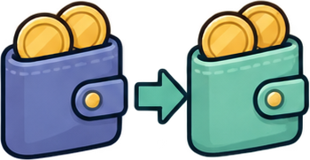
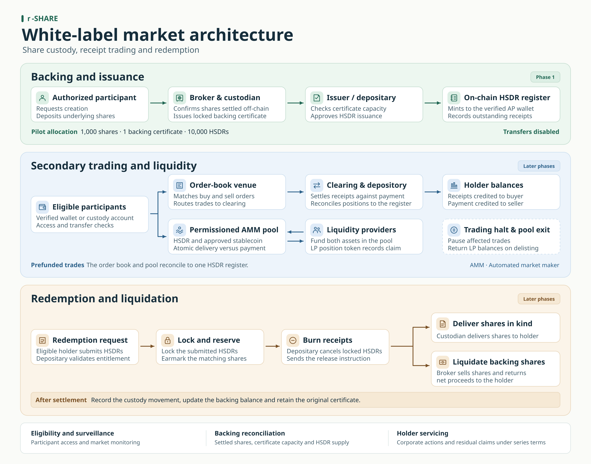

Held in programme custody and recorded in the custodian's securities books.
Issuance model
Phase 1 covers issuance against settled shares. HSDRs are minted to the AP after custody attestation and issuer approval.
CC-001 is a non-transferable NFT using ERC-721 and ERC-5192, associated with the programme account.
A permissioned ERC-20-compatible token issued to the AP's verified wallet at 10 HSDRs per share.
Phase 1 boundary: issue and mint only. Transfers are disabled. The controller uses CC-001 capacity once to mint the receipts directly to the AP.
How issuance works
The custodian confirms settlement. The issuer or depositary approves the mint.
-
Authorized participant
Deposits 1,000 shares.
-
Custodian
Confirms the shares and issues certificate CC-001.
-
Issuer or depositary
Approves minting 10,000 HSDRs to the AP.
After chain finality, the workflow reconciles custody and publishes the AP balance.
Pilot interfaces
The pilot connects participant and partner systems to an issuance workflow and an Ethereum EVM implementation.
Web portal and partner systems
AP request, custody evidence and issuer approval.
Workflow API
The workflow API verifies EIP-712 signatures and submits the issuance workflow. It can use any suitable application technology.
Ethereum EVM
Solidity contracts. Develop locally with Anvil, then integrate on the Sepolia testnet.
Transfer and redemption
Transfers and withdrawals are separate options for later phases. They are outside the Phase 1 issuance-only boundary.

Transfer
An HSDR transfer from the AP wallet to an eligible wallet keeps total supply and backing unchanged.
Partial redemption
Reserve and lock the receipts and shares, burn the receipts, then release the settled shares to the holder.
2,500 HSDRs burned; 250 shares released.7,500 HSDRs remain backed by 750 shares.
Record the settled release against CC-001. Mint capacity stays at zero. Keep the original certificate for audit and close it after the final share release.
Market venue view
The white-label market architecture starts with custody-backed issuance and a shared HSDR register, with possible paths for secondary trading, liquidity, redemption and liquidation.

The order book and permissioned AMM are market-venue options in the architecture view. Eligibility and surveillance, backing reconciliation, and holder servicing apply across the lifecycle.